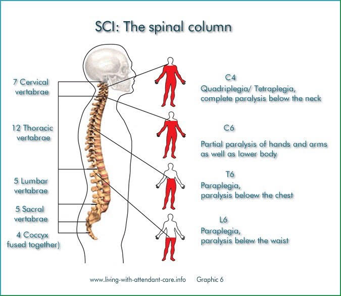

We are three students from the Athénée Royal de Dour: Ilana Kulinich, Ella Verkindere, and Léa Tromont. As part of our advanced science laboratory course, our teachers have given us the opportunity to participate in Sciences Expo Belgium 2024.
For this venture, we decided to create a project that is both current and close to our hearts: The spinal immobilization, what about children?
We were drawn to the prehospital care field through the Provincial School of Ambulance Technicians of Hainaut. In fact, Léa's father is the director of this school. Having grown up in this environment, she has been able to meet professionals in the field. It was in June 2023, while observing a school instructor, Kevin Bernard, conducting exams that she first heard about the issue of spinal immobilization in young children.
We had heard about the changes concerning spinal immobilization techniques for adults: the transition from cervical collars and BaXstrap boards to head blocks and scoop stretchers. However, we quickly understood that this equipment would not work for infants or young children. Léa then inquired about what existed for them, and she learned that there was a gap in the market.
The new device is currently being used in only a few other countries, which gives us time to create a pediatric device to address the future needs of other countries. Belgium is one of the first countries to initiate change by demonstrating the harmful effects of the old equipment, and we hope that other countries will follow.
For the realization of our project, we have been fortunate to count on the support of three instructors from the school of ambulance technicians: Kevin Bernard, Christopher Vido, and Virginie Pireyn, who is also an emergency nurse. Other instructors have also taken an interest in our work and have validated our ideas. A quiz is offered above to test your knowledge of the issue highlighted by our project and to give you an initial idea of the direction we are heading.